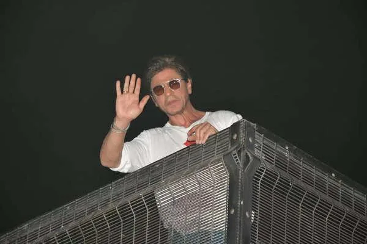
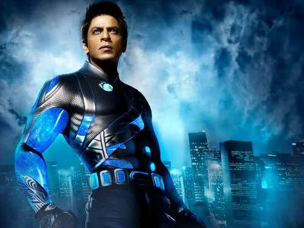
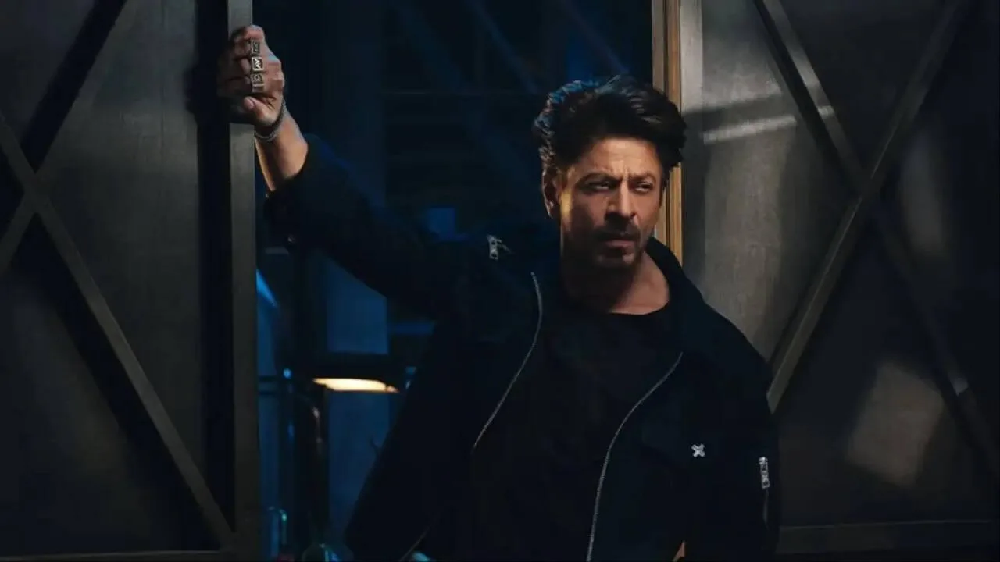

The Final Thesis · section 39 of 92
EPILOGUE — THE KING HAS NOT ANSWERED



4
The story began with a superhero.
It continued with a train.
Then came a period in which the digital revolution seemed to lose its momentum.
ZERO.
A silence.
A family crisis that, in Gupta's account, became the straw that broke the camel's back.
Then three films that brought the King back to the centre of the cinematic universe.
Pathaan.
Jawan.
Dunki.
And now KING.
But perhaps the most intriguing question is not whether Shah Rukh Khan can make another blockbuster.
It is whether he will return to the unfinished experiment that began with Ra.One and found one of its clearest expressions in Chennai Express.
Will the digital revolution remain a series of exceptional campaigns, each reinvented for a new release?
Or could the next chapter connect cinema, AI, sports, technology and fan communities into a continuing entertainment ecosystem?
Will the King simply conquer the box office again?
Or will he change the rules by which the kingdom operates?
The evidence establishes the historical innovations, the later campaign patterns, the 2021 crisis, the 2023 cinematic return, the international business expansion and the AI investment connection.
It does not establish a secret plan for KING.
That uncertainty is not a defect in the story. It is the reason the story remains worth following.
And so we return to the satire.
ASOKA TO BOODA.
Be Da Boo-Da.
The conqueror becomes the observer. The empire becomes the question. The King steps away from the old game, only to return when the rules of the game may be changing.
Is the apparent silence a pause?
Is it a recalibration?
Is it simply the quiet before another film release?
Or is the man who once attempted to make Bollywood interactive preparing to revisit that ambition in an age when every fan can become a storyteller?
What's Mr. Khan cooking?
What's he up to?
What's this silence?
What storm is brewing?
The curtain has not risen.
The King has not answered.
And perhaps, after all these years, the most interesting thing about KING is not what we know.
It is what we are still waiting to discover.
Publication note
This is a cultural and digital-marketing thesis, not a claim that Shah Rukh Khan has announced an undisclosed KING technology initiative. The Ra.One, Chennai Express and subsequent film campaign sections draw on documented campaign histories and contemporary reporting. The 4 October 2021 passage reflects Gupta's stated recollection and interpretation. ASOKA TO BOODA is a satirical creative framework, not a claim about Khan's personal beliefs or intentions. The proposed KING FAN ARENA is an independent concept, not an official campaign announcement.
Move Asoka to Booda after chapter 7, Asoka to Booda , this time, the king is not giving up his kingdom, he is going ALL IN, Doubling, tripling down, The Royal Flush..with the movie KING, and then the ads, hurun list, KKR stadium, investment in FLAM, and whats brewing. Makes sense?
Yes. That makes the entire narrative click into place. The earlier placement of ASOKA TO BOODA made it sound like Shah Rukh Khan was renouncing his kingdom. Your intended metaphor is the exact opposite.
The King is not giving up the kingdom. He is returning to the game with more chips on the table.
The structure should be:
Chapters 1–4: The digital empire, Ra.One and Chennai Express, the > apparent innovation back-off, and ZERO.
Chapter 5: 4 October 2021—the personal ordeal as the straw that > broke the camel's back.
Chapter 6: Pathaan, Jawan and Dunki—the resurrection and > restoration of the King's cinematic power.
Chapter 7: The transition from the comeback to the evidence of a > much broader expansion.
Chapter 8, after the resurrection: ASOKA TO BOODA—this time, the > King goes ALL IN. KING, endorsements, the Hurun wealth estimates, > Knight Riders' LA stadium, FLAM and the open question of what is > brewing.
Epilogue: The Royal Flush. The cards are on the table, but the final > hand has not been revealed.
The satire becomes a strategic reversal: the old emperor's supposed withdrawal is reinterpreted as a possible change of game—not an abandonment of power.